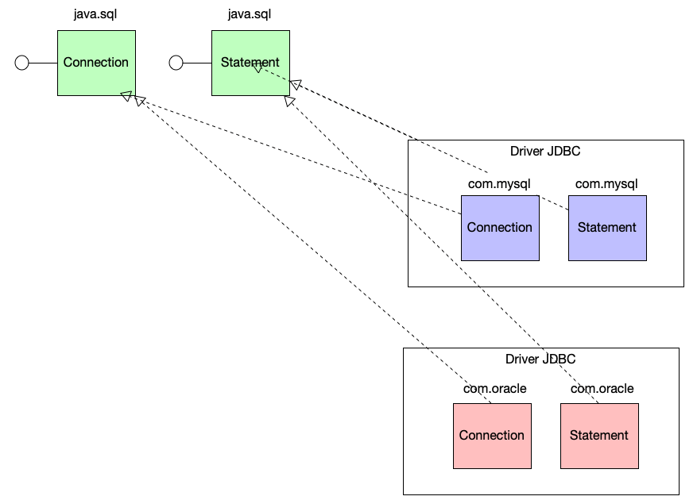

JDBC: Java DataBase Connectivity (en español: Conectividad a bases de datos de Java), es una API que permite la ejecución de operaciones sobre bases de datos desde el lenguaje de programación Java, independientemente del sistema operativo donde se ejecute o de la base de datos a la cual se accede, utilizando el dialecto SQL del modelo de base de datos que se utilice.
Arquitectura de Conexión:
Para utilizar una base de datos particular, el usuario ejecuta su programa junto con la biblioteca de conexión apropiada al modelo de su base de datos, y accede a ella estableciendo una conexión; para ello provee el localizador a la base de datos y los parámetros de conexión específicos. A partir de allí puede realizar cualquier tipo de tarea con la base de datos a la que tenga permiso: consulta, actualización, creación, modificación y borrado de tablas, ejecución de procedimientos almacenados en la base de datos, etc.
